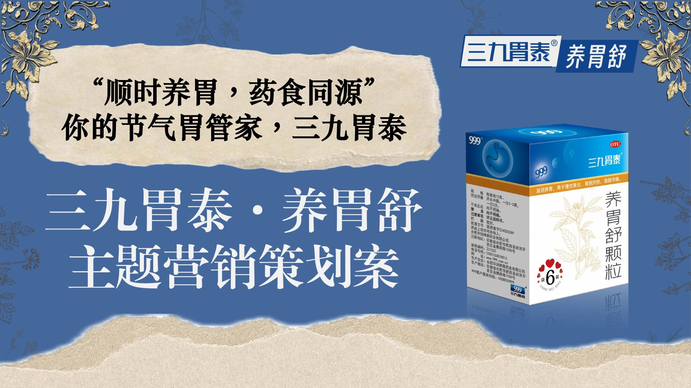

问题与定位
第 6–13 页围绕用户画像、品类、产品认知与选择困难展开分析。
05 / STRATEGY / 策划
主题营销策划作品 · 项目组长
MY ROLE
我担任策划组组长，统筹选题思路、团队协作与方案整合，以“顺时养胃”为统一主张，串联人群洞察、角色 IP、内容创意与分阶段传播规划。将团队的不同创意组织为逻辑一致的提案，使品牌表达、用户参与方式与渠道安排相互衔接，形成从问题分析到传播动作的完整策划。
OVERVIEW
方案从年轻人养胃信息过载、产品选择困难与品牌认知出发，以二十四节气串联“顺时养胃”主张，设计守胃犬与草本角色 IP，并规划 H5、AR、快闪体验、科普内容和用户共创。作品呈现市场分析、创意概念到分阶段传播与预算的完整提案链条，所有活动和业务效果仍属于计划层面。
CAPABILITY IN PRACTICE
第 6–13 页围绕用户画像、品类、产品认知与选择困难展开分析。
第 15–20 页以节气主题串联信息框架与角色 IP，将零散创意组织为能够延展到不同内容和触点的表达体系。
以组长角色推动方案整合；第 23、27–31 页规划测试、分享、共创和分阶段传播，将创意主题落到具体渠道与参与方式，H5、AR 等按提案呈现。
READ THE COMPLETE WORK
下方展示完整作品，可连续翻页或跳到任意一页。

点击页面可放大查看。阅读器聚焦后可用左右方向键翻页。